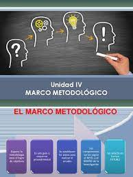

Marco metodologia
Definición 1:
Conjunto de métodos que se siguen en una investigación científica o en una exposición doctrinal.
Definición 2:
El marco metodológico de la tesis es el conjunto de técnicas y procedimientos que se emplean para formular las hipótesis,
resolver problemas y llevar a cabo la investigación. Es decir que en él explicaremos la metodología con la que llevaremos
a cabo nuestro proyecto de investigación.
Especifico.
- Explicar la estructura de una página web y darle flexibilidad cómo puede ser con JavaScript.
- Aplicar conocimientos obtenidos en investigaciones para realizar las estructuras de algoritmos.
|
|
|
|---|---|
|  |